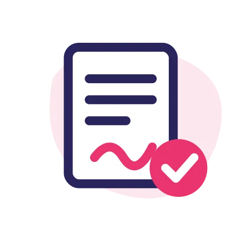

Étapes 3 et 4
3
On vous rappelle
Une recruteuse échange avec vous sur votre projet, puis vous rencontrez l’employeur.
4

Contrat, permis, départ
Contrat signé avant le départ. Nos équipes s’occupent du permis de travail et de votre installation.